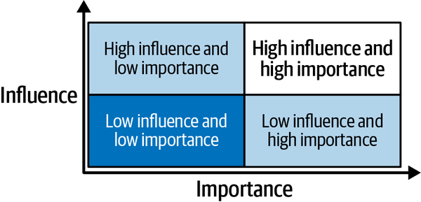
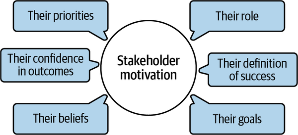

The heart of an effective enterprise architecture strategy is creating shared alignment for architecture decisions. In Chapter 2, you learned that creating shared alignment means that all impacted stakeholders are aligned to adhere with an architecture decision, even if they don’t necessarily agree with that decision or would have preferred an alternative. You also learned that a culture of trust is foundational to achieve alignment. In this chapter, you’ll go deeper to better understand mechanisms that you can use to create shared alignment and the culture of trust that is a prerequisite for it.
Did you know that enterprise architecture as a function is uniquely positioned to bring a group of individual stakeholders together with a common goal? It is unique because enterprise architecture is concerned with a holistic perspective and solving problems with the whole company in mind. This is different from organizational functions like engineering, business development, and cybersecurity. Whereas these functions do work toward the company’s common goal, such as increasing business revenue, each function tends to focus on solving its own problems first. For example, cybersecurity may seek additional protections and risk mitigations, while engineering may seek to modernize, and business development may seek to penetrate new markets. Only enterprise architecture is positioned to look across all of these functional areas to define the north star as a modernization strategy with security built in to allow for new market growth.
To establish an effective enterprise architecture practice, you must transform teams of individuals to teams of a collective whole, and you need to do that at scale. While enterprise architecture as a function enables architect roles (enterprise, solution, and application) to chart paths into the unknown and define the north star of technology strategy and technology solutions, the paths need to be implemented by the efforts of partners such as engineering, product, and cybersecurity. This is necessary whether the north star guidance is as broad as an enterprise strategy or as narrow as a single application. At the broadest level the partners are at senior leadership level, whereas at the most granular level the partners are specific to a single application team.
A real-life example is the construction of a house. I’m sure you would agree that it does no good for an architect to create great blueprints if the construction manager can’t find the building materials to build them or the electrician is nowhere to be found to do the wiring because they’re too busy with other jobs and priorities. Whereas, if the architect, construction manager, and electrician worked together from the beginning, they could have come up with a feasible blueprint and aligned schedules to make the delivery work—for them, and for their customer.
Effective enterprise architecture as an organizational function can set the course for bringing stakeholders together to work collectively. The first step to creating shared alignment for an architecture decision begins with knowing who needs to align.
Knowing who needs to be engaged and aligning them on the problem statement along with, and prior to, aligning them on the solution, is essential to the success of architecture work. If the wrong stakeholders are included, then the credibility of the decision is likely to be undermined, the decision is likely to be ignored and not get implemented, and the decision is likely to be relitigated once the right stakeholders get involved.
Have you ever gone through a long, arduous collaboration process to get to a decision only to find out, after the decision was approved, that some key stakeholders had been missed in the impact analysis or that you had the wrong approver? I have, and it is exceedingly frustrating to be in this circumstance. It took me some time to understand that it didn’t matter how good of a job I did in thinking through my analysis and recommendations if I didn’t bring the right stakeholders along with me on that decision-making journey.
Fortunately for me, I have the benefit of project management and consulting experience to draw from, and I learned several techniques around stakeholder management that I can now share with you to help prevent such frustrating scenarios from occurring.
So, what exactly do I mean by a stakeholder? Let’s find out.
A stakeholder refers to a person or group that is impacted by the decision, has authority over the decision, and/or is a subject matter expert in the decision’s problem space.
Impact refers to any positive or adverse change that occurs as a result of implementing the decision’s solution. Going back to my real-life house example, the homeowner is positively impacted, and the neighbors are also impacted, potentially in an adverse way during construction.
Authority refers to positional or designated ability to approve changes recommended by the decision. In the real-life house example, the construction manager has approval authority over his team to oversee the implementation work. It may also be necessary to attain a permit to do the construction work. The permit approver has authority over issuing that permit.
Subject matter expert (SME) refers to having the expertise necessary to vet the decision in terms of completeness, feasibility, and/or impact. For example, when considering a house, a housing inspector is the SME on housing regulations and can tell whether or not the house is compliant.
Now, when you think about all of the stakeholders that meet one or more of these criteria for your architecture decision, you may end up with a very long list. To filter or prioritize this list, you also need to consider the influence level of the stakeholder and the importance of the decision to that stakeholder.
Influence refers to the ability of the stakeholder to impact the outcome of the decision itself. High influence means that their dissent is a roadblock or impediment. For example, let’s say a decision requires implementing a change to query logic of a reporting dashboard. The engineering and product owners of that reporting dashboard would be highly influential in that decision.
Importance means that the stakeholder has an internal or external motivation to be engaged in the decision-making process. An example of internal motivation is when the decision impacts an area that aligns with their interest or passion, and therefore they consider it important. Personally, my love for cloud technology drives my willingness to participate in strategic cloud-related decisions. An example of an external motivation is an organizational incentive; perhaps there’s a reward or recognition for someone to be involved or the decision is important because it impacts the success of an initiative or solution that they own or the decision-making process requires their approval.
Figure 3-1 illustrates the dimensions of influence and importance in a quadrant chart.

The top right quadrant contains your key target stakeholders, those with high influence and high importance. These are the ones that need regular engagement in your decision-making process and need to be kept mollified. They should be engaged from the very beginning and throughout the decision-making process, and their engagement is quite active. For instance, they are invited to meetings, they review documentation, they are provided frequent updates, and they can provide comments. In the real-life house example, the homeowner and the construction manager are stakeholders in this quadrant.
The top left quadrant of stakeholders is important to consider and keep aligned because of the high influence that they wield. However, because they would consider this decision to be less important and therefore of less relevance to them, you likely only need to monitor them and reach out sporadically. For example, you could set up infrequent check-ins to ascertain their needs and provide briefings, or disseminate documentation as milestones in the decision making process are hit. Note, you may even need to convince them that they are key stakeholders by making a case for why this decision should be important to them. In the real-life house example, the permit approver is in this quadrant because construction cannot proceed without them yet they don’t have a specific tie to any given construction project.
Stakeholders in the bottom right quadrant, low influence and high importance, are likely to be noisy if not engaged in some fashion, so it is best to keep them informed and abreast of updates, even if they are not actively part of the decision-making process. For example, let’s say there is a decision that changes a key reporting metric and there are some power users that heavily use the metric in multiple downstream reports. The change is of high importance to the power users, but they could be deemed as low influence in that the change has to happen with or without their support. As it is usually better to have support, it would be good to give them a chance to be informed and react to the change early and provide feedback, even if they can’t actually change the outcome of the decision. In the real-life house example, the neighbors fit this criteria.
The bottom left quadrant, low influence and low importance, means that these stakeholders are not needed in the decision-making process. Only if the decision actually impacts them would there need to be an effort to communicate essential relevant information once the decision is finalized. For instance, taking the same example above, of a decision that changes a key reporting metric, let’s say this time there are only end users that sometimes use that metric. They would need to be notified to understand the change, but they would not necessarily be included in the decision-making process of the details of the change if they are mapped as low influence and low importance. In the real-life house example, the housing inspector fits in this quadrant; they need to know the house was built to do the inspection, but they are not directly involved in the decisions made to build the house.
To perform a stakeholder mapping, first brainstorm all the possible stakeholders against the criteria and then map them against the quadrant chart. You could use a table format like Table 3-1.
| Name | Impact | Authority | SME | Influence | Importance |
|---|---|---|---|---|---|
| Person/Group | Yes/No | Yes/No | Yes/No | High/Low | High/Low |
Table 3-2 shows using this mapping for the real-life example of the house.
| Name | Impact | Authority | SME | Influence | Importance |
|---|---|---|---|---|---|
| Homeowner | Yes | Yes | No | High | High |
| Construction manager | Yes | Yes | Yes | High | High |
| Permit Approver | Yes | Yes | No | High | Low |
| Neighbors | No | No | No | Low | High |
| Housing Inspector | Yes | Yes | Yes | Low | Low |
Your stakeholder mapping for a given architecture decision will tell you who needs to be engaged in making that architecture decision. But what exactly does engaged mean? The next section explains.
Stakeholder engagement defines how to include a stakeholder and for what activity. Engaged means that a stakeholder is one or more of the following:
This stakeholder ensures that all necessary decision-making process steps are followed, and they may also need to implement next steps.
This stakeholder ensures that the outcome of the architecture decision is realized.
This stakeholder provides inputs that help shape and strengthen the architecture decision.
This stakeholder needs to be told about the decision, typically with respect to the result of the decision and transparency into who made the decision and with what considerations.
A common depiction of engagement is a RACI chart as shown in Table 3-3.
| Stakeholder 1 | Stakeholder 2 | Stakeholder 3 | Stakeholder 4 | |
|---|---|---|---|---|
| Activity | A | R | C | I |
There must only be one accountable stakeholder for each defined activity. Shared accountability doesn’t work very well in practice since it diffuses and weakens accountable authority. That’s very different from responsibility. While there must be at least one responsible stakeholder to ensure that someone does the activity, there can be more than one. The accountable stakeholder can also be responsible, though does not have to be. Overall, for an architecture decision-making process, for every activity, you need one accountable and at least one responsible stakeholder. Depending on the specific architecture decision, there may be none, one, or multiple consulted or informed stakeholders.
Table 3-4 provides an example RACI chart filled out for an architecture decision.
| Architect | Engineering lead | Product lead | SME | |
|---|---|---|---|---|
| Conduct analysis of alternatives | A/R | C | C | C |
| Complete proof of concept | A | I | I | R |
| Approve decision from business perspective | I | I | A/R | C/I |
| Approve decision from engineering perspective | I | A/R | I | C/I |
In this example, the architect role is accountable and responsible for providing the analysis that goes into the decision. They actively collaborate with other stakeholders to vet and document the architecture decision. They also work with an SME to perform a proof of concept to validate their recommendation. (Note: as this is a generic decision, I’ve used the generic architect role rather than the more specific application architect, solution architect, or enterprise architect role. The type of architect, and seniority of architect, vary based on the scope of decision.)
The engineering lead is accountable and takes responsibility for the results of the decision from a technology perspective. They actively review and approve the decision from an engineering implementation perspective. The seniority of the engineering lead varies based on the scope of the decision and organizational structure.
Similarly, the product lead is accountable and takes responsibility for the results of the decision from a product perspective. They actively review and approve the decision from a product need and prioritization perspective. The seniority of the product lead varies based on the scope of the decision and organizational structure.
The SME is consulted to provide input and vet the alternatives and analysis conducted in the decision. They bring relevant subject matter expertise in the business and/or technology referenced by the decision to strengthen the decision.
Your RACI should be a transparent artifact that sets the expectations of the stakeholders that you engage with. That transparency up front also allows them the ability to confirm whether or not they are in fact the right stakeholder for that specific level of involvement. For instance, you may end up with an accountable stakeholder providing you with delegates that are responsible, such that the responsible stakeholders are engaged in day-to-day collaboration and the accountable stakeholder just needs to be debriefed periodically. You may find out that you need a higher level of seniority to be your accountable lead.
It is very important to complete this confirmation step as part of your stakeholder mapping process. Otherwise, you may risk making false assumptions of who is your stakeholder, and how they should be engaged.
What if your stakeholder map ends up with an unmanageable number of stakeholders with whom to engage? For that, let’s look at scaling stakeholder engagement.
Especially for transformational decisions that impact the entire enterprise or organizational units, it is impossible to directly include every stakeholder that will be impacted by that decision. Rather, the organization should have a culture of trust such that there is a trusted individual that can serve as the authoritative representative of a group, an organizational unit, or a functional area in the enterprise and can voice the larger group’s opinion.
In an organization in which consensus is deeply rooted, it may be beneficial to include a request for comment (RFC) period as part of the transparent decision-making process. RFC allows for a large group to be invited to consult on the proposal beyond the SMEs that are directly involved in collaborative meetings. It can also be helpful to timebox a decision, meaning give a deadline. That way, there is a finite time period in which to debate and then come to a conclusion, rather than perpetually bring in more and more stakeholders for input and/or drag on the discussions.
In addition, for all types of organizations, the decision-making process should be very transparent and well documented. That way, the reasoning for the decision, the alternatives considered, the implications identified—all of that is available for people who were not directly involved in making the decision to better understand the decision. This transparency is also helpful if you need to include new stakeholders along the way because of organizational changes or because new impacts are identified as part of the decision-making process.
Knowing who to include, and how exactly to engage them, is essential to creating shared alignment. How does knowing this help you in your organization? Well, as part of establishing the objective of creating shared alignment, consider the maturity of your organization. Are there processes or organizational elements that need to be improved to do the following?
Do definitions exist? Are people aligned with them? Is there training to confirm that understanding?
Do RACI charts exist? Do people understand them? Do people use them? Is there an authorization hierarchy that is well understood?
Are templates available? Do architects understand how to do a stakeholder mapping? Is there a baseline defined for the enterprise that enterprise leadership aligns to, which can be tailored as needed for a given architecture decision? Are stakeholders included consistently in decision-making workflows?
Are stakeholders incentivized to work as a team? Is leadership advocating for collective goals?
Does such a process exist? Does tooling exist to support that process? Is it easy to find decision documentation? Is an RFC process needed, and if so, is it operational? Is there consistent execution of these processes?
Any gaps or improvement opportunities become inputs into your specific key results (KR) for this strategic objective. For example, maybe your organization doesn’t have shared alignment on architecture roles and how to engage them. In that situation, that could be the first KR that your enterprise architecture strategy function goes after, to define a baseline stakeholder role definition and stakeholder engagement RACI that your senior leadership agrees with. Maybe the enterprise architecture enablement function provides templates and tooling. Perhaps the enterprise architecture enforcement function comes up with requirements around engagement at key points of the software delivery lifecycle. The details of the KRs will vary by organization, but if you assess your organization and figure out where the highest-leverage opportunities are, you can turn those opportunities into specific KRs that are relevant to your organization.
To identify who is engaged in an architecture decision, I mentioned earlier that you’ll want to consider who is impacted by the decision. To understand who is impacted, it is necessary to have a well-grounded understanding of the decision’s problem statement to identify those impacts. Let’s look at this in detail in the next section.
If the stakeholder doesn’t care about the problem, understand the benefit of solving that problem, and/or understand the need to solve it now, then there is very little prospect that they will engage in problem-solving in the desired timeline and align with the recommended solution that is documented in an architecture decision.
The first act of engaging the stakeholder is to review the problem statement and ensure that you and the stakeholder are interpreting the problem statement the same way. It is very easy to assume that stakeholders understand the problem, but I found from my experience that people often talk past each other instead of to each other to define a shared understanding.
So, methodically state the problem statement, but do so in a way that sells its value and makes it clear that solving the problem will provide a collective gain.
When defining a problem statement, ensure that you sell the why, which means that you are able to clarify the following to avoid conflicting goals:
Why this problem? What is the context for it?
Why now? Why not later?
What’s the impact in business terms of this problem?
The mistake that I have made and often see is stopping with stating what the problem is, rather than emphasizing why that problem is impactful.
To make this less abstract, here are two real-life problems that I experienced while writing this paragraph today:
My car doesn’t have enough gas to get very far.
We are missing a main ingredient for our dinner.
Which of these problems do I tackle first? Do I get gas or go grocery shopping?
To answer that, I need to first understand the impact. Problem number 2 is impactful because without that main ingredient, we will have no dinner, and we need to eat. It definitely needs to be solved. Problem number 1 is only impactful if I need to use my car to drive somewhere. Thus, most likely I will table problem number 1 until I need to drive, and solve problem number 2 by walking to the grocery store. On the other hand, if I was dealing with time pressure, I would get gas on the way to the grocery store, thereby solving both problems together. There’s no right or wrong answer here; it’s more that thinking through impact is more helpful for problem-solving than just stating what the problem is.
Along with articulating impact, you also need to state the benefits of solving the problem. By benefits, I am referring to tangible, positive business outcomes that help attain business objectives. The reason I stress business outcomes here is because effective architecture marries the usage of technology to business needs; it is only in delivering business value that the architecture work delivers value. Ask yourself these questions:
What business objective is achieved or what progress is made toward that objective?
Who benefits if the problem is solved?
Are there ways to expand the benefits, either to more stakeholders or to more reuse?
Business benefits are often stated in terms of the following:
Include cost reduction, increased cost efficiency, improved return on investment, avoidance of future costs, and increased profits or revenue
Include risk reduction or mitigation
Include reducing level of effort, increasing human productivity rates, faster time to market, improved employee satisfaction, increased employee retention, and increased operational efficiency
Include increased quality of service, reliability of service, improved customer satisfaction, and increased loyalty
I highly recommend quantifying as much as you can. It is much more compelling to have quantitative data for the problem statement’s impact and benefits than it is to have qualitative assertions. For example, a 20% productivity improvement is more compelling and easier to understand than stating that solving the problem would help increase productivity. Be sure to ground your qualitative output in a credible basis, such as historical precedent, assumptions, and/or anecdotal evidence that is then extrapolated.
Get into the habit of sizing the problem, sizing its impacts, and sizing its benefits.
Attempt #1: “This problem causes challenges for our developers.”
This problem statement is very weak. So what if it causes challenges? Developers face tons of challenges.
Attempt #2: “This problem causes challenges that waste developers’ time.”
Better, but still not getting a sense of scale. Is this a papercut or a true blocker?
Attempt #3: “This problem causes challenges that waste 20% of the average developer’s capacity every release cycle. Fixing this problem will enable 1.5x new business features to be developed every quarter.”
If I’m a business stakeholder, I now care. I want more features! If I’m a technology stakeholder, I care. I want to free up my most precious resource, human developers! If I’m a cybersecurity stakeholder, I don’t care yet.
Attempt #4: “This problem causes challenges that waste 20% of the average developer’s capacity every release cycle. Fixing this problem while incorporating security controls will enable 1.5x new business features to be developed every quarter safely.”
Boom! Now, as a cybersecurity stakeholder, I can tell that my expertise will be needed in a consultative manner. As a business and technology stakeholder, I know that I will be accountable and responsible for this decision for my particular areas of responsibility. As a developer, I am excited to see this decision get made, because it benefits me.
Always ask yourself “So what?” when you review a problem statement, to help you define the why.
Now that you have a compelling problem statement that clearly articulates impact and benefit, you are one step further on your journey to get shared alignment. However, sometimes, you may find that even with the best-written problem statement, your stakeholders still don’t agree that the problem has to be solved right now. What happened? Most likely, a priority mismatch.
I’ve been in situations where stakeholders agree that there is a problem, and that it would in fact be good to solve it, but, because there were higher-priority fires burning that absolutely had to be solved right now, that this one would have to wait. The capacity of human resources, after all, is a finite resource.
What’s a passionate architect to do in this situation?
Get really frustrated and quit.
Try again to build a more compelling business case.
Disagree and commit to helping with the burning fire, so that you can come back to the problem that you really care about later.
If I thought I had misunderstood the importance factor and did not make the argument as relevant or compelling as it could have been based on the stakeholder’s motivations, I would probably put some effort into number 2. If I thought that the return on investment (ROI) really wasn’t there for the problem as compared with others, then I would likely do number 3, but I would still get commitment from the stakeholders that they would revisit and evaluate at a later time.
To prevent getting to this frustrating point, get familiar with that stakeholder’s prioritization framework. This would be the criteria that they use to prioritize what work must be done versus what work should be done versus what work needs to wait or not be done. Common criteria include impact and benefits, which were discussed earlier in this chapter. The others tend to be effort, investment, and risk. Effort refers to level of effort, or human labor. How many stakeholders need to be involved and for how long? What kind of capacity is required? Investment refers to a material stake; for example, will a proof of concept be needed that requires infrastructure or third-party resources? Risk refers to all types of risk—technology, cybersecurity, business—is any new risk incurred by deviating resources to work on this?
Ultimately, you’re trying to make the business case that there is more value to be gained than there is effort needed, whether you’re trying to get alignment just to execute the decision-making process or you’re trying to get alignment to execute on implementation after an approved decision.
Knowing how to align stakeholders on the problem statement, and why it is important to solve that problem now, is essential to creating shared alignment. How does knowing this help you in your organization? As part of establishing the objective of creating shared alignment, assess if there are processes or organizational elements that need to be improved for the following:
Are there high-level enterprise objectives that new work can be aligned against?
Does your organization run on slideware? Whitepapers? Something else? Whatever it is, is there a template available for architects to use in this style to explain problem statements with quantitative benefits? Are there forums where leaders can be engaged to discuss problems and priorities?
Is there a consistent prioritization framework across the organization? Or at least within organizational units? Do those prioritization frameworks include referencing architecture decisions?
Now that the stakeholders have been identified and aligned with the why, it’s time to discuss how to get alignment on the decision itself.
To gain shared alignment from your various stakeholders on the decision itself, you need to become adept at conflict resolution. Conflict during the decision-making process can actually be very positive, as this allows for diverse perspectives to be considered. Concerns can be transparently aired and addressed to strengthen the solution recommendation in the final decision.
There are many methods for conflict resolution. What follows is what I have seen work well from experience. The first part of my conflict resolution approach is to consider different perspectives.
Put yourself in a stakeholder’s position. What are their motivations based on their role and responsibilities, historical record of actions, and goals? What concerns could they raise? What are they worried about, and what is their most pressing priority? How much context do they already have, and what information do they need? See Figure 3-2 for visualization.

You’ve actually done some amount of motivational analysis previously in your stakeholder mapping, when you determined how important the problem statement and solving it are to the stakeholder. If you have direct access to a stakeholder, a preexisting relationship, and/or experience with them, it is of course much easier to ascertain their motives. If you do not, though, which very well may be the case if you’re working in a new area or if you are at a more junior level than the stakeholders that you need buy-in from, then you may need to do some detective work via networking first. Find peers who can get you information about their organizational purpose, and about them. Find a manager who might have better access than you do to make some introductions to people who can get you the insight that you seek.
To preclude relationship-based conflict where people don’t get along, it is very important not to judge motivations and the concerns that stem from them. Rather, it is much more beneficial to review concerns with curiosity to truly understand them. This can be difficult, since people typically have predefined beliefs, biases, and assumptions that color concerns. Sometimes, emotions get involved, too. Even still, it is better to really listen to the stakeholder rather than to try and validate your own assumptions of how the stakeholder should be thinking.
For example, there were times in my career where I thought that a particular architecture decision was a no-brainer. The solution was based on thorough analysis, and it seemed to be a no-regrets move to go forward with it. However, sometimes I would get surprised when a stakeholder in a different area, like legal or cybersecurity, would balk at the solution. In those situations, I needed to take a step back and get rid of my preconceived notions to ask them what they were concerned about and why.
Seek to understand other points of view with curiosity rather than defending your position. Invest in listening.
Getting concerns aired transparently is key to identifying the source of conflict. Your conversation skills can help do this, and that brings me to the second part of my conflict resolution approach, which is to foster positive conflict in conversation.
In conversations where the goal is to align stakeholders, I recommend the following:
Be positive, open, approachable, and engaged. Be clear and concise. Acknowledge concerns and varying perspectives, even if you don’t agree with them. Everyone wants to be respected, heard, and understood.
Separate facts from fiction. Sometimes people have firm beliefs that are not actually true.
Beware of emotions. Diffusing tense situations typically requires a person to control their own emotions before they can diffuse others’.
Doing the right thing is more important than being right. And that could mean compromising, admitting when you were wrong, and/or changing your point of view of the right path forward.
Add value to the conversation by offering your point of view and your opinions.
Table 3-5 provides some prompts and revisions that you could use to help listen and align the stakeholder’s views.
| Instead of… | Try to… |
|---|---|
|
Being open-ended to solicit input, with statements such as “What do you think?” |
Be more specific. For example, “What concerns do you have about this solution?” |
|
Saying only “Great, thanks” to show you appreciate their input. |
Play back what you heard: “Thanks! It sounds like…about…” Example: “Thanks! It sounds like you’re concerned about introducing new risks with this solution.” If you don’t understand enough of what they said to play back, ask: “Thanks for sharing. Please tell me more. When you say new risk, what do you mean?” |
|
Providing your point of view without acknowledging theirs, by saying, “I think this solution works well because…” |
Share your point of view while acknowledging that you understand theirs: “I understand that this solution introduces a new risk, and here’s my point of view on how we can mitigate that.” Include them in problem-solving if you don’t have an answer: “I understand how important it is to address new risks. What are some mitigation measures that we could take?” |
|
Closing the conversation without gratitude. For example, “OK, we’ll get back to you.” |
Manners and gratitude go a long way. Human connection is an essential basis of establishing trust. Remind the stakeholder that this is an “us” issue for the greater good: “I appreciate you sharing your concerns openly; thanks for taking the time to work through them together.” |
With these communication aids, your positive conflict conversations should be productive in that they raise the true concerns. Next, you have to deal with them productively. That brings me to the third and final part of my conflict resolution approach, which is to resolve the positive conflict.
Document concerns as part of the trade-off analysis of the architecture decision to (a) show that you listened and (b) provide a tangible artifact for them to review and validate that you heard correctly. This is especially necessary if the concern needs to be accepted as a risk and cannot be ameliorated by changing the decision.
Speaking of documentation, make sure you also get alignment documented, in the form of concurrence or formal approval, either in meeting minutes or as part of the decision record. This documentation for posterity can be very helpful to avoid future rehashes of the same topic, and it also shows that the stakeholders really were on the same page and not just assumed to have been aligned.
Remember that you can timebox if you need to curtail chatter and bring about a resolution—whether that is a consensus-based resolution or a disagree-and-commit resolution. Timebox means putting a timeline against how long a decision will be debated before it is finalized.
Escalation is another mechanism, but it should be used sparingly. Escalation means going to someone with higher authority than the stakeholder expressing concerns to see if they can bring about alignment using their positional authority. Escalation is usually only necessary if the stakeholder refuses to disagree and commit, but it can also backfire if the root cause of the concern is not actually addressed, since the escalation authority may in fact have the same issue.
Just agreeing with a decision isn’t enough. You also need commitment from stakeholders that the decision will be implemented. Commitment means that the stakeholders also feel that they have an obligation to ensure that the outcomes sought by the decision are actually achieved. The stakeholder clearly understands what part they play, and what value they bring, in getting to the overall collective goal.
Commitment means that there is follow-through on an implementation plan relating to the decision. The work required to implement the decision should be formally tracked and absorbed into however work is managed at your organization. It’s a good idea to revisit the decision and celebrate joint successes when the outcome is achieved, or if the decision is for something complicated and long-lived, for the milestones as well. Also, if the people in a stakeholder’s role change over time, then also make sure that they know about the previous commitments to be able to honor them.
Now that we’ve covered conflict resolution and commitment, let’s see how they relate to your effective enterprise architecture strategy.
Knowing how to align stakeholders on the decision itself is essential to creating shared alignment. How does knowing this help you in your organization? As part of establishing the objective of creating shared alignment, assess if there are processes or organizational elements that need to be improved in the following areas:
Is there training available for your talent? Are there preferred communication styles?
Is positive conflict part of the cultural mindset? Is positive conflict embraced as part of collaboration, or is there conflict avoidance?
Do stakeholders understand accountability? Is there a culture of holding each other accountable for commitments?
With this basis of aligning on who, aligning them on the why, and aligning them on the decision, you should be in good shape to create shared alignment to a greater degree than what exists today.
Let’s review a few case studies related to creating shared alignment and examine some thematic dos and don’ts that they reveal. Let’s pretend that we’re reviewing a software company called EA Example Company.
Let’s look at the first scenario, the mandate.
EA Example Company had a problem. Software release after software release went to production rife with bugs and issues. Engineering teams were constantly in the mode of fixing incidents caused by changes. New features were being delayed.
The senior engineering executive—let’s call him Tom—needed to solve this problem. He turned to his enterprise architecture team for help. The enterprise architecture team reviewed recent incident history and talked with some of the engineering teams involved in those incidents. They quickly determined that the root cause of this vicious cycle of bugs and issues was a lack of effective testing. If there was good-quality testing, then the bug or issue would have been caught earlier in the software delivery lifecycle, prior to the production release. The engineering team would still have to fix the bug or issue, but much earlier and under much less time pressure than when the issue became an incident. Further, if the testing was automated, then the volume of tests could scale more quickly to match the pace of desired releases.
Tom was excited to get this insight. He promptly issued a mandate that no code was to go to production without automated unit testing coverage of 90%.
Tom’s engineering teams grumbled a bit, but because they were under a mandate, and that mandate was enforced by their deployment tooling, they complied. They spent side of desk time learning how to automate unit tests. They spent time developing unit tests, and changes that went to production did pass those unit tests.
However, EA Example Company noticed that there was still a trend of production incidents caused by changes, particularly those dealing with dependencies or integrations with other systems. In addition, employee satisfaction was declining.
What happened here? Let’s take it point by point.
The enterprise architecture team engaged stakeholders—the engineering teams—to figure out the root cause of the problem. But they did not dig hard enough. Why was there a lack of testing efforts? Was testing incentivized by the organization? There are multiple types of testing; why focus only on the bare minimum of unit testing? Automated testing is easier said than done; where was the feasibility analysis for enablement?
The leadership gave a mandate to solve what they thought was the problem, but it wasn’t quite the right problem, and there was a lack of stakeholder buy-in and enablement to conform to that mandate. There was no explanation provided to the engineering teams having to do the work. The engineering teams didn’t have proper tools and processes to be successful. There was no priority trade-off allowing engineering teams to upskill in the automated testing needs. There was no trusted representative of the engineering teams to engage in the decision-making process.
So, to summarize, key takeaways from this tale are as follows.
Do:
Engage stakeholders to validate assumptions and come up with a recommendation.
Use mandates to enforce requirements if needed, but provide transparency into the mandate’s rationale and benefits.
Don’t:
Blindly mandate metrics. Metrics drive behavior. In this case, the mandate incentivized greater unit testing code coverage without emphasizing the quality of the tests. Therefore, the outcome of improving incidents was not realized.
Issue mandates without an explanation or without an understanding of the feasibility of adhering to that mandate.
Ignore impacted stakeholders as part of the decision-making process.
Let’s now take a look at another scenario, the relitigation.
Jane spends a lot of time making architecture decisions. She does a stakeholder analysis and includes the right stakeholders to be accountable, responsible, consulted, and informed. She makes sure to document the decision, along with the decision’s approval.
Over time, there are changes at EA Example Company, and as a result, there are new people in the roles of the former approvers. The new people aren’t aware of the previous decisions, and they start directing contradictory work. Jane finds out and reviews the decisions with them. They decide that the decisions made by their predecessors are invalid, and therefore, new decisions need to be made. The decision-making process starts all over again.
What happened here?
Jane did all the right things in getting alignment to the original decision, but the decision was not lasting due to factors outside of her control. Apparently, there’s an underlying issue of a lack of trust between the new set of stakeholders and the original set, and/or the stakeholders thought their way was better than the old way.
Key takeaways from this tale are summarized below.
Do:
Consider the right stakeholders and follow a transparent decision-making process.
Establish a culture of trust in the organization. It is always possible that decisions need to be refined if there is new information that changes an assumption or constraint that was considered in making the decision, but changing people should not invalidate a former decision.
Define principles for consistent decision making.
Don’t:
Assume that new leaders understand why and how a previous decision was made. Recommunicate as needed, and keep documentation records.
Next, let’s look at a scenario called the silo.
EA Example Company needed to solve problems with data management and data privacy. The data management team included their solution architect, product lead, and engineering lead to come up with an architecture and solution for registering data and managing data lineage. Similarly, the data privacy team included their solution architect, product lead, and engineering lead to come up with a great architecture and solution for classifying data and filtering data access based on privacy rules. However, neither solution worked well with each other. Thus, engineering teams had to provide data classification information as part of the data management solution and as part of the data privacy solution. There were no cross-checks between them to gather insights into the data or scale the efforts around the data.
What happened here?
While each decision at a local level seemed like the right decision, when looked at together, it is clear that they were made in silo. Either the data management and data privacy architects should have engaged one another, or an overarching enterprise data architect should have been engaged to bring their efforts together. The stakeholder analysis was not done or missed the fact that the data management and data privacy solutions would impact one another.
Let’s summarize the key takeaways from this tale.
Do:
Ensure that all impacted stakeholders are identified and included.
Share decisions.
Promote collaboration between silos.
Don’t:
Assume limited impact from a given decision.
Now, let’s look at another situation, called the never-ending debate.
EA Example Company once experienced a conflict between two application architects, Jane and John. The compute layer of an application was already containerized but was running on a self-managed compute service that came with an infrastructure management tail. Tom, the engineering manager, thought it would be good to get out of the infrastructure management overhead, and he asked them for a decision on what cloud service technology to use for the compute layer of their application.
Jane had good experience with serverless compute and thought that was best. John, however, was adamant that containers were already a great compute option and they should just stick with that, but in a managed container service form. They both stuck to their convictions and could not come to an agreement. As a result, the engineering team did neither and stuck with their self-managed option.
What happened here?
It doesn’t matter if Jane was right or if John was right. Because they could not agree on a direction, the engineering team ended up not doing anything differently and therefore did not get any benefit. Tom’s problem was not solved, and he probably lost some trust in the role of application architects.
Ideally, either Jane or John could have taken the lead on conflict resolution. They could have set aside their differences to learn from one another on why they had such firm convictions on their solution outcome. They could have taken a step back to factually review the needs of the compute layer and compare that with the service capabilities to figure out the best option. They could have timeboxed their debate time, and, if all else failed, agreed to disagree and commit, to make progress. Any decision is usually better than no decision, assuming that the culture is OK with taking some amount of risk. Last but not least, they could have invested in taking some time to connect with one another to strengthen their own relationship.
Key takeaways from this tale are summarized below.
Do:
Timebox decisions.
Promote a culture of collective gain.
Invest in relationships and human connection.
Don’t:
To achieve the shared alignment objective and tailor KRs for your own organization, consider any weak points in your organizational structure and/or processes that may hinder creating shared alignment across varied stakeholders. What can you strengthen to support stakeholder management?
First, you need to institute the mechanisms necessary to clearly identify who needs to be engaged in making the architecture decision and how they should be engaged:
Are there techniques for stakeholder mapping, to identify who is impacted by this architecture decision, who wields the right level of influence, and who considers the impact important to them?
Are there mechanisms for defining stakeholder engagement plans, where it is clear who needs to be accountable, who is responsible, who needs to be consulted, and who needs to be informed for all relevant activities?
Second, you need to establish mechanisms that allow for gaining alignment on the problem statement, and the priority of that problem statement:
Is there any methodology, frameworks, or templates available to support defining problem statements in terms of impacts and business benefits, in quantifiable terms?
Third, you need a foundation to get alignment and commitment on the decisions themselves:
What are the challenges that the organization faces in creating shared alignment? Are there cultural issues, such as a lack of trust? Are there pace issues, such as mismatched priorities? Are there talent issues, such as a lack of skill to provide the level of conversation needed to agree?
Is there transparency in the architecture decision-making process? At every level of the organization? Are decisions well understood? By leadership? By teams?
Use this framework to diagnose weaknesses in your organization that you can strengthen through your enterprise architecture strategy objective and KRs for creating shared alignment. Next up, we’ll go in detail on embedded and accessible architecture information.